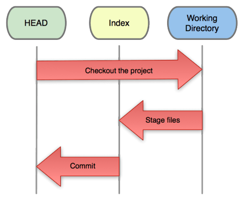

What is Git?
Git is:
- A program you run from the command line
- A distributed version control system
Programmers use Git so that they can keep the history of all the changes to their code. This means that they can rollback changes (or switch to older versions) as far back in time as they started using Git on their project.
What is Git?
You know how Google Docs allow you to have a "version history" and move between different versions whenever you want? Git enables you to do that with any folder - and its contents - on your computer!
A codebase in Git is referred to as a repository, or repo, for short.
Git was created by Linus Torvalds, the principal developer of Linux.
What is GitHub?
GitHub is:
- A hosting service for Git repositories
- A web interface to explore Git repositories
- A social network of programmers
- We all have individual accounts and put our codebases on our GitHub account
- You can follow users and star your favorite projects
- A place where developers can access public codebases
Can you use git without GitHub?
Git is a software that enables version control on local folders on your machine. GitHub is a place to host your Git repositories, remotely. You can certainly have local files, that are using Git, that are not sent to or stored on GitHub.
Why is Git tricky to understand?
- Working Directory: like any other folder on your machine; just holds the actual files
- Index: acts as a staging area (an area that holds files "ready" to be versioned)
- HEAD: points to the last commit you've made (the last "version" of the code you've stored using git)
Why is Git tricky to understand?
Modern day usage
The move away from tables for layout purposes has meant that tables can be used for what they were originally intended to be used for...
...presenting tabular data!